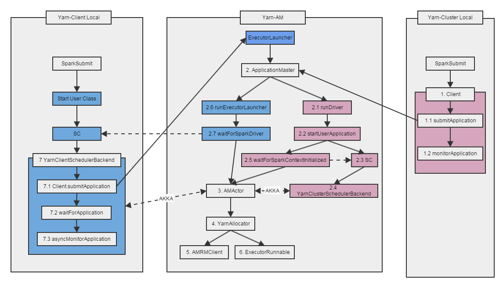

Mars的笔记

Spark on Yarn源码分析
阅读本篇需要Yarn的基础，强烈推荐Yarn入门文章: YARN应用开发流程。
本篇代码基于Spark-1.3.0。
Spark on Yarn调用流图
Spark on Yarn支持两种部署模式：Cluster VS Client。
两种模式最大的区别在于Spark Driver的运行位置，Cluster模式下Driver运行在Application Master中，而Client模式下Driver运行在本地。
Yarn Cluster模式
Yarn Client模式
Spark利用AKKA位置透明的特性，使得这两种模式可以共用同一套代码。Spark on Yarn调用流图如下：

Yarn-Cluster模式代码分析
1: Client
SparkSubmit是Spark程序的入口
if (isYarnCluster) {
//启动Client类
childMainClass = "org.apache.spark.deploy.yarn.Client"
//...
}Client.main
//读取参数
val args = new ClientArguments(argStrings, sparkConf)
new Client(args, sparkConf).run()Client.run
//submit & monitor application
val (yarnApplicationState, finalApplicationStatus) = monitorApplication(submitApplication())1.1: SubmitApplication
Client.submitApplication
//新建一个Application
val newApp = yarnClient.createApplication()
val newAppResponse = newApp.getNewApplicationResponse()
val appId = newAppResponse.getApplicationId()
//创建environment, java options以及启动AM的命令
val containerContext = createContainerLaunchContext(newAppResponse)
//创建提交AM的Context，包括名字、队列、类型、内存、CPU及参数
val appContext = createApplicationSubmissionContext(newApp, containerContext)
//向Yarn提交Application
yarnClient.submitApplication(appContext)Client.createContainerLaunchContext
//创建environment, java options以及启动AM的命令
val launchEnv = setupLaunchEnv(appStagingDir)
val amContainer = Records.newRecord(classOf[ContainerLaunchContext])
amContainer.setLocalResources(localResources)
amContainer.setEnvironment(launchEnv)
val amClass =
if (isClusterMode) {
Class.forName("org.apache.spark.deploy.yarn.ApplicationMaster").getName
} else {
Class.forName("org.apache.spark.deploy.yarn.ExecutorLauncher").getName
}
// Command for the ApplicationMaster
val commands = prefixEnv ++ Seq(
YarnSparkHadoopUtil.expandEnvironment(Environment.JAVA_HOME) + "/bin/java", "-server"
) ++
javaOpts ++ amArgs ++
Seq(
"1>", ApplicationConstants.LOG_DIR_EXPANSION_VAR + "/stdout",
"2>", ApplicationConstants.LOG_DIR_EXPANSION_VAR + "/stderr")
val printableCommands = commands.map(s => if (s == null) "null" else s).toList
amContainer.setCommands(printableCommands)
// send the acl settings into YARN to control who has access via YARN interfaces
val securityManager = new SecurityManager(sparkConf)
amContainer.setApplicationACLs(YarnSparkHadoopUtil.getApplicationAclsForYarn(securityManager))
setupSecurityToken(amContainer)
UserGroupInformation.getCurrentUser().addCredentials(credentials)Client.createApplicationSubmissionContext
//创建提交AM的Context，包括名字、队列、类型、内存、CPU及参数
val appContext = newApp.getApplicationSubmissionContext
appContext.setApplicationName(args.appName)
appContext.setQueue(args.amQueue)
appContext.setAMContainerSpec(containerContext)
appContext.setApplicationType("SPARK")
sparkConf.getOption("spark.yarn.maxAppAttempts").map(_.toInt) match {
case Some(v) => appContext.setMaxAppAttempts(v)
case None => logDebug("spark.yarn.maxAppAttempts is not set. " +
"Cluster's default value will be used.")
}
val capability = Records.newRecord(classOf[Resource])
capability.setMemory(args.amMemory + amMemoryOverhead)
capability.setVirtualCores(args.amCores)
appContext.setResource(capability)1.2: monitorApplication
val report = getApplicationReport(appId)
val state = report.getYarnApplicationState
val details = Seq[(String, String)](
("client token", getClientToken(report)),
("diagnostics", report.getDiagnostics),
("ApplicationMaster host", report.getHost),
("ApplicationMaster RPC port", report.getRpcPort.toString),
("queue", report.getQueue),
("start time", report.getStartTime.toString),
("final status", report.getFinalApplicationStatus.toString),
("tracking URL", report.getTrackingUrl),
("user", report.getUser)
)2: 启动ApplicationMaster
ApplicationMaster.main 是AM的入口函数
//读取参数并启动ApplicationMaster
val amArgs = new ApplicationMasterArguments(args)
SparkHadoopUtil.get.runAsSparkUser { () =>
master = new ApplicationMaster(amArgs, new YarnRMClient(amArgs))
System.exit(master.run())
}ApplicationMaster.run
//两种模式在这里分叉
if (isClusterMode) {
runDriver(securityMgr)
} else {
runExecutorLauncher(securityMgr)
}2.1: ApplicationMaster.runDriver
//配置IP Filter
addAmIpFilter()
//启动用户程序
userClassThread = startUserApplication()
//等待用户启动SC
val sc = waitForSparkContextInitialized()
if (sc == null) {
finish(FinalApplicationStatus.FAILED,
ApplicationMaster.EXIT_SC_NOT_INITED,
"Timed out waiting for SparkContext.")
} else {
actorSystem = sc.env.actorSystem
//启动AMAcotr
runAMActor(
sc.getConf.get("spark.driver.host"),
sc.getConf.get("spark.driver.port"),
isClusterMode = true)
//向RM注册AM相关信息
registerAM(sc.ui.map(_.appUIAddress).getOrElse(""), securityMgr)
userClassThread.join()
}2.2: startUserApplication
//启动用户的程序
val mainArgs = new Array[String](args.userArgs.size)
args.userArgs.copyToArray(mainArgs, 0, args.userArgs.size)
mainMethod.invoke(null, mainArgs)
finish(FinalApplicationStatus.SUCCEEDED, ApplicationMaster.EXIT_SUCCESS)2.3: SparkContext
//用户的程序新建SparkContext
//启动YarnClusterScheduler和YarnClusterSchedulerBackend
case "yarn-standalone" | "yarn-cluster" =>
if (master == "yarn-standalone") {
logWarning(
"\"yarn-standalone\" is deprecated as of Spark 1.0. Use \"yarn-cluster\" instead.")
}
val scheduler = try {
val clazz = Class.forName("org.apache.spark.scheduler.cluster.YarnClusterScheduler")
val cons = clazz.getConstructor(classOf[SparkContext])
cons.newInstance(sc).asInstanceOf[TaskSchedulerImpl]
} catch {
case e: Exception => {
throw new SparkException("YARN mode not available ?", e)
}
}
val backend = try {
val clazz =
Class.forName("org.apache.spark.scheduler.cluster.YarnClusterSchedulerBackend")
val cons = clazz.getConstructor(classOf[TaskSchedulerImpl], classOf[SparkContext])
cons.newInstance(scheduler, sc).asInstanceOf[CoarseGrainedSchedulerBackend]
} catch {
case e: Exception => {
throw new SparkException("YARN mode not available ?", e)
}
}
scheduler.initialize(backend)
(backend, scheduler)2.4: YarnClusterSchedulerBackend -> YarnSchedulerBackend -> CoarseGrainedSchedulerBackend -> SchedulerBackend
SchedulerBackend API
def start(): Unit
def stop(): Unit
def reviveOffers(): Unit
def defaultParallelism(): Int
def killTask(taskId: Long, executorId: String, interruptThread: Boolean): Unit
def isReady(): Boolean = true
def applicationId(): String = appIdCoarseGrainedSchedulerBackend API
def doRequestTotalExecutors(requestedTotal: Int): Boolean
def doKillExecutors(executorIds: Seq[String]): Boolean
def sufficientResourcesRegistered(): BooleanYarnSchedulerBackend
//连接到ApplicationMaster中的AMActor，通过AMActor向Yarn进行资源申请
private val yarnSchedulerActor: ActorRef =
actorSystem.actorOf(
Props(new YarnSchedulerActor),
name = YarnSchedulerBackend.ACTOR_NAME)
override def doRequestTotalExecutors(requestedTotal: Int): Boolean = {
AkkaUtils.askWithReply[Boolean](
RequestExecutors(requestedTotal), yarnSchedulerActor, askTimeout)
}
override def doKillExecutors(executorIds: Seq[String]): Boolean = {
AkkaUtils.askWithReply[Boolean](
KillExecutors(executorIds), yarnSchedulerActor, askTimeout)
}2.5: waitForSparkContextInitialized
//等待SC初始化完成
while (sparkContextRef.get() == null && System.currentTimeMillis < deadline && !finished) {
logInfo("Waiting for spark context initialization ... ")
sparkContextRef.wait(10000L)
}3: AMActor
AMActor负责接收YarnSchedulerBackend的消息，来对Yarn进行资源申请。
ApplicationMaster.runAMActor
actor = actorSystem.actorOf(Props(new AMActor(driverUrl, isClusterMode)), name = "YarnAM")ApplicationMaster.AMActor
override def preStart() = {
driver = context.actorSelection(driverUrl)
// Send a hello message to establish the connection, after which
// we can monitor Lifecycle Events.
driver ! "Hello"
driver ! RegisterClusterManager
}
override def receive = {
case x: DisassociatedEvent =>
// In cluster mode, do not rely on the disassociated event to exit
// This avoids potentially reporting incorrect exit codes if the driver fails
if (!isClusterMode) {
finish(FinalApplicationStatus.SUCCEEDED, ApplicationMaster.EXIT_SUCCESS)
}
case x: AddWebUIFilter =>
driver ! x
case RequestExecutors(requestedTotal) =>
Option(allocator) match {
case Some(a) => a.requestTotalExecutors(requestedTotal)
case None => logWarning("Container allocator is not ready to request executors yet.")
}
sender ! true
case KillExecutors(executorIds) =>
Option(allocator) match {
case Some(a) => executorIds.foreach(a.killExecutor)
case None => logWarning("Container allocator is not ready to kill executors yet.")
}
sender ! true
}ApplicationMaster.registerAM
//向RM注册AM相关信息(UIAddress、HistoryAddress、SecurityManager、SecurityManager、preferredNodeLocation)，并启动线程申请资源
allocator = client.register(yarnConf,
if (sc != null) sc.getConf else sparkConf,
if (sc != null) sc.preferredNodeLocationData else Map(),
uiAddress,
historyAddress,
securityMgr)
//申请资源
allocator.allocateResources()
//启动一个线程来向Yarn进行资源申请
reporterThread = launchReporterThread()ApplicationMaster.launchReporterThread
//启动一个线程来向Yarn进行资源申请
if (allocator.getNumExecutorsFailed >= maxNumExecutorFailures) {
finish(FinalApplicationStatus.FAILED,
ApplicationMaster.EXIT_MAX_EXECUTOR_FAILURES,
"Max number of executor failures reached")
} else {
logDebug("Sending progress")
allocator.allocateResources()
}4: YarnAllocator
用来向Yarn进行资源申请
API
def getNumExecutorsRunning: Int = numExecutorsRunning
def getNumExecutorsFailed: Int = numExecutorsFailed
def getNumPendingAllocate: Int = getNumPendingAtLocation(ANY_HOST)
def requestTotalExecutors(requestedTotal: Int)
def killExecutor(executorId: String)
def allocateResources(): Unit
def updateResourceRequests(): UnitYarnAllocator.allocateResources
updateResourceRequests()
val allocateResponse = amClient.allocate(progressIndicator)
val allocatedContainers = allocateResponse.getAllocatedContainers()
if (allocatedContainers.size > 0) {
handleAllocatedContainers(allocatedContainers)
}
val completedContainers = allocateResponse.getCompletedContainersStatuses()
if (completedContainers.size > 0) {
processCompletedContainers(completedContainers)
}YarnAllocator.updateResourceRequests
val numPendingAllocate = getNumPendingAllocate
val missing = targetNumExecutors - numPendingAllocate - numExecutorsRunning
if (missing > 0) {
for (i <- 0 until missing) {
val request = new ContainerRequest(resource, null, null, RM_REQUEST_PRIORITY)
amClient.addContainerRequest(request)
val nodes = request.getNodes
val hostStr = if (nodes == null || nodes.isEmpty) "Any" else nodes.last
}
} else if (missing < 0) {
val numToCancel = math.min(numPendingAllocate, -missing)
val matchingRequests = amClient.getMatchingRequests(RM_REQUEST_PRIORITY, ANY_HOST, resource)
if (!matchingRequests.isEmpty) {
matchingRequests.head.take(numToCancel).foreach(amClient.removeContainerRequest)
} else {
logWarning("Expected to find pending requests, but found none.")
}
}5: AMRMClient[ContainerRequest]
Yarn提供的API，用于向Yarn申请资源。
YarnAllocator.getNumPendingAtLocation
amClient.getMatchingRequests(RM_REQUEST_PRIORITY, location, resource).map(_.size).sumYarnAllocator.allocateResources
amClient.allocate(progressIndicator)YarnAllocator.updateResourceRequests
val request = new ContainerRequest(resource, null, null, RM_REQUEST_PRIORITY)
amClient.addContainerRequest(request)
amClient.getMatchingRequests(RM_REQUEST_PRIORITY, ANY_HOST, resource)
if (!matchingRequests.isEmpty) {
matchingRequests.head.take(numToCancel).foreach(amClient.removeContainerRequest)
} else {
logWarning("Expected to find pending requests, but found none.")
}YarnAllocator.internalReleaseContainer
amClient.releaseAssignedContainer(container.getId())6: ExecutorRunnable
用来在Yarn的Container上启动程序
run
nmClient = NMClient.createNMClient()
nmClient.init(yarnConf)
nmClient.start()
startContainerstartContainer
val ctx = Records.newRecord(classOf[ContainerLaunchContext])
.asInstanceOf[ContainerLaunchContext]
val localResources = prepareLocalResources
ctx.setLocalResources(localResources)
ctx.setEnvironment(env)
val credentials = UserGroupInformation.getCurrentUser().getCredentials()
val dob = new DataOutputBuffer()
credentials.writeTokenStorageToStream(dob)
ctx.setTokens(ByteBuffer.wrap(dob.getData()))
val commands = prepareCommand(masterAddress, slaveId, hostname, executorMemory, executorCores,
appId, localResources)
ctx.setCommands(commands)
ctx.setApplicationACLs(YarnSparkHadoopUtil.getApplicationAclsForYarn(securityMgr))
if (sparkConf.getBoolean("spark.shuffle.service.enabled", false)) {
val secretString = securityMgr.getSecretKey()
val secretBytes =
if (secretString != null) {
// This conversion must match how the YarnShuffleService decodes our secret
JavaUtils.stringToBytes(secretString)
} else {
// Authentication is not enabled, so just provide dummy metadata
ByteBuffer.allocate(0)
}
ctx.setServiceData(Map[String, ByteBuffer]("spark_shuffle" -> secretBytes))
}
nmClient.startContainer(container, ctx)Yarn-Client模式代码分析
7: 触发提交Application的过程
用户新建SparkContext
//启动YarnClientSchedulerBackend
case "yarn-client" =>
val scheduler = try {
val clazz =
Class.forName("org.apache.spark.scheduler.cluster.YarnScheduler")
val cons = clazz.getConstructor(classOf[SparkContext])
cons.newInstance(sc).asInstanceOf[TaskSchedulerImpl]
} catch {
case e: Exception => {
throw new SparkException("YARN mode not available ?", e)
}
}
val backend = try {
val clazz =
Class.forName("org.apache.spark.scheduler.cluster.YarnClientSchedulerBackend")
val cons = clazz.getConstructor(classOf[TaskSchedulerImpl], classOf[SparkContext])
cons.newInstance(scheduler, sc).asInstanceOf[CoarseGrainedSchedulerBackend]
} catch {
case e: Exception => {
throw new SparkException("YARN mode not available ?", e)
}
}
scheduler.initialize(backend)
(backend, scheduler)YarnClientSchedulerBackend.start
val argsArrayBuf = new ArrayBuffer[String]()
argsArrayBuf += ("--arg", hostport)
argsArrayBuf ++= getExtraClientArguments
val args = new ClientArguments(argsArrayBuf.toArray, conf)
totalExpectedExecutors = args.numExecutors
client = new Client(args, conf)
//7.1
appId = client.submitApplication()
//7.2
waitForApplication()
//7.3
asyncMonitorApplication()2: ApplicationMaster (和cluster模式稍有不同）
ExecutorLauncher.main
//Yarn-Client模式下，ApplicationMaster的入口
//为什么不直接用ApplicationMaster.main？因为jps可以通过类的名字区分Client和Cluster模式
def main(args: Array[String]) = {
ApplicationMaster.main(args)
}ApplicationMaster.run
//这次选择runExecutorLauncher
if (isClusterMode) {
runDriver(securityMgr)
} else {
runExecutorLauncher(securityMgr)
}2.6: ApplicationMaster.runExecutorLauncher
actorSystem = AkkaUtils.createActorSystem("sparkYarnAM", Utils.localHostName, 0,
conf = sparkConf, securityManager = securityMgr)._1
//等待用户初始化SC
waitForSparkDriver()
addAmIpFilter()
//向RM注册AM相关信息
registerAM(sparkConf.get("spark.driver.appUIAddress", ""), securityMgr)
// In client mode the actor will stop the reporter thread.
reporterThread.join()2.7: ApplicationMaster.waitForSparkDriver
var driverUp = false
val hostport = args.userArgs(0)
val (driverHost, driverPort) = Utils.parseHostPort(hostport)
val totalWaitTime = sparkConf.getLong("spark.yarn.am.waitTime", 100000L)
val deadline = System.currentTimeMillis + totalWaitTime
while (!driverUp && !finished && System.currentTimeMillis < deadline) {
try {
val socket = new Socket(driverHost, driverPort)
socket.close()
logInfo("Driver now available: %s:%s".format(driverHost, driverPort))
driverUp = true
} catch {
case e: Exception =>
logError("Failed to connect to driver at %s:%s, retrying ...".
format(driverHost, driverPort))
Thread.sleep(100L)
}
}
if (!driverUp) {
throw new SparkException("Failed to connect to driver!")
}
sparkConf.set("spark.driver.host", driverHost)
sparkConf.set("spark.driver.port", driverPort.toString)
//启动AMActor
runAMActor(driverHost, driverPort.toString, isClusterMode = false)Data Locality
使用preferredNodeLocationData，可以让Yarn分配距离数据较近的Container
val locData = InputFormatInfo.computePreferredLocations(
Seq(new InputFormatInfo(conf, classOf[TextInputFormat], new Path("hdfs:///myfile.txt")))
val sc = new SparkContext(conf, locData)Spark on Yarn存在的问题
- Spark无法动态增加/减少资源 YARN-1197
- Spark日志存储问题 YARN-321
- YARN允许spark作业为driver和executor设置需要的cpu和内存资源量，但是到底设置多少最为合适，这显然不好确定。因此，最好能够提供一个资源获取工具，可以查看spark作业实际占用的内存和cpu资源量，以便修正用户的资源参数。
References
- YARN应用开发流程
- Spark on Yarn: a deep dive - Sandy Ryza @Cloudera
- spark on yarn的技术挑战 - 董的博客
- Apache Spark Resource Management and YARN App Models - Cloudera Blog
- Apache Spark源码走读之8 -- Spark on Yarn - 徽沪一郎的博客